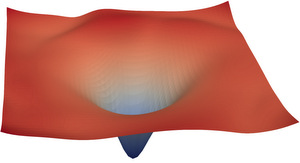
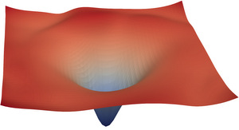

Supervised Learning with TensorFlow
Oliver Zeigermann / @DJCordhose
Illustration using Loss Landscape

deep network, sharp surface, many solutions

residual shortcuts, smooth surface, naturally converging
ResNet Architecture having 56 layers
https://github.com/tomgoldstein/loss-landscape#visualizing-3d-loss-surface
deep network, sharp surface, many solutions

residual shortcuts, smooth surface, naturally converging
ResNet Architecture having 56 layers
https://github.com/tomgoldstein/loss-landscape#visualizing-3d-loss-surface